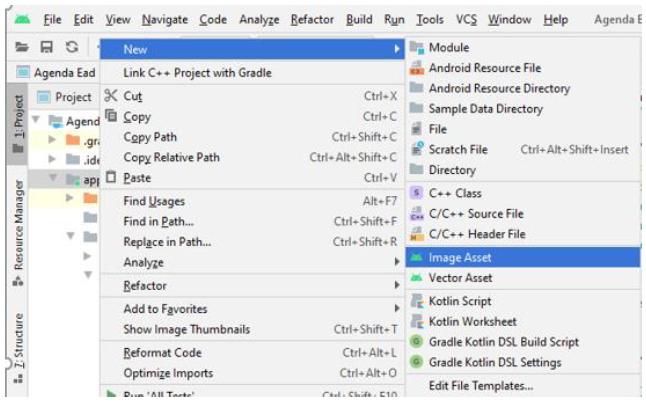
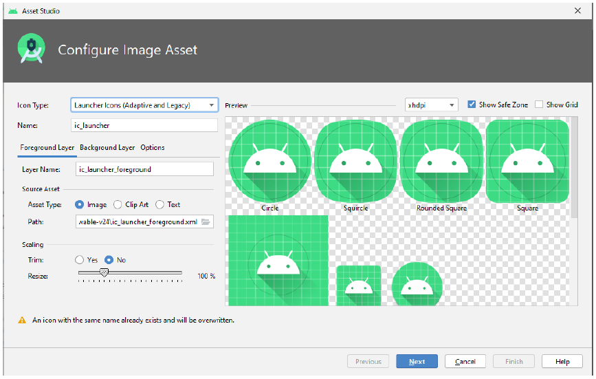
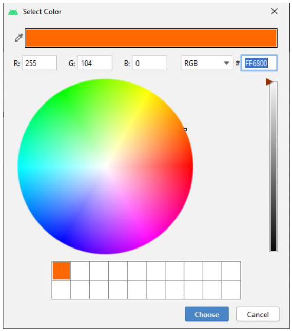

home
parte 2
parte 3
parte 4
parte 5
parte 6
parte 7
Android com Banco de Dados – Parte VI
1 CRIAÇÃO DO LAYOUT DO ITEM DA LISTVIEW
Nas aulas presencias, falamos sobre a customização de um ListView e, que esse processo, seria realizado por
ocasião do aprendizado de banco de dados. Para exibirmos os nossos contatos salvos em banco vamos criar o Layout
de cada item da nossa lista, ou seja, cada contato.
Primeiramente vamos criar os ícones representarão o nome do contato, celular do contato, telefone residencial do
contato e email do contato.
Na pasta do projeto, app, clicar com o botão direito do mouse, posicionar o cursor sobre New e
clicar em Image Asset (figura 1).

Será exibida a caixa de diálogo abaixo (figura 2).

-
Icon Type: Selecione a opção Action Bar and Tab Icons
-
Name: Mantenha o ic do nome e em seguida coloque o nome de acordo com o uso, exemplo, ic_name,
ic_cell_phone, ic_home_phone, ic_email;
-
Asset Type: Mantenha selecionado o Radio Button Clip Art;
-
Clip Art: É um Button, ao clicar vamos poder selecionar o clip art na galeria de ícones do Material
Design do Android de acordo com o desejado; Abaixo estão os nomes de cada um dos clip arts que usaremos.
- Person (ícone do nome);
- Phone (ícone do telefone residencial);
- Phone Android (ícone do telefone celular);
- Email (ícone do email);
-
Trim: Vamos selecionar o yes (remover espaços);
-
Padding: Ajustes de espaçamento interno, vamos ajustar para não haver cortes no nosso ícone;
-
Theme: Vamos selecionar a opção Custom e definir a cor do clip art, ao selecionar o Custom,
será exibido mais uma opção.
-
Custom Color: É um botão com o valor FFFFFF, que nada mais é que a cor branca em hexadecimal. A
clicar será aberta uma caixa de diálogo para seleção da nova cor; Use o mouse escolha a mesma cor para todos
os ícones. Dica: guarde o valor hexadecimal para usar nos demais (figura 3), em seguida, clique em Choose;
